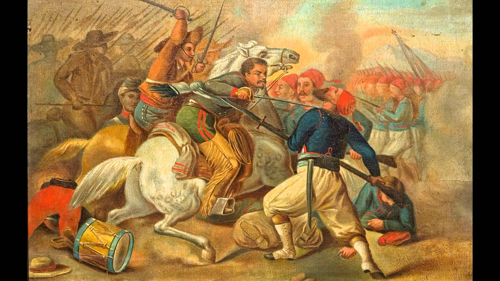
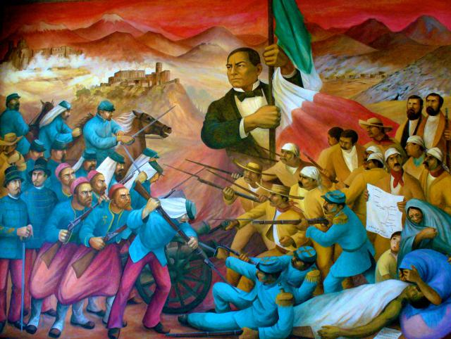

La Batalla de Atlixco tuvo lugar el 4 de mayo de 1862 en las inmediaciones de la Hacienda de las Traperas en Atlixco en el estado de Puebla, México, entre elementos del ejército mexicano de la república, al mando de los generales Antonio Carvajal y Tomás O'Horan contra las tropas al servicio del Segundo Imperio Mexicano comandadas por el general José María Cobos y de Leonardo Márquez, compuesta de soldados conservadores mexicanos en apoyo de envío de refuerzos para llevar a cabo la Batalla de Puebla, durante la Segunda Intervención Francesa en México.1
Esta batalla culminó con una victoria republicana y debido a esto el grupo conservador de Márquez no pudo lograr su objetivo de auxiliar a las tropas francesas del Conde de Lorencez en la batalla de Puebla.
La batalla de Puebla fue un combate librado el 5 de mayo de 1862 en las cercanías de la ciudad de Puebla, entre los ejércitos de la República Mexicana, bajo el mando de Ignacio Zaragoza, y del Segundo Imperio Francés, dirigido por Charles Ferdinand Latrille, conde de Lorencez, durante la Segunda Intervención Francesa en México, cuyo resultado fue una victoria importante para los mexicanos ya que con unas fuerzas consideradas como inferiores lograron vencer a uno de los ejércitos más experimentados y respetados de su época. Pese a su éxito, la batalla no impidió la invasión del país, aunque sí que sería la primera batalla de una guerra que finalmente México ganaría. Los franceses regresarían al siguiente año, con lo que se libró una segunda batalla en Puebla en la que se enfrentaron 35 000 franceses contra 29 000 mexicanos (defensa que duró 62 días) y lograrían avanzar hasta la Ciudad de México, lo que permitió establecer el Segundo Imperio Mexicano. Finalmente, ante la incapacidad de consolidar un imperio y después de perder 11 000 hombres debido a la actividad guerrillera que nunca dejó de subsistir,1 los franceses se retiraron incondicionalmente del país en el año 1867.
En octubre de 1861, Francia, Inglaterra y España suscribieron la Convención de Londres, en la cual se comprometieron a enviar contingentes militares a México para reclamar sus derechos como acreedores por una deuda que ascendía a alrededor de 80 millones de pesos, de los que aproximadamente 69 millones corresponderían a Inglaterra, 9 millones a España y 2 millones a Francia.
El contingente europeo estaba conformado como sigue:
España: 6000 hombres al mando del General Juan Prim.
Francia: 3000 hombres dirigidos por el Contraalmirante Edmond Jurien de la Gravière.
Reino Unido: 700 marines bajo el comando del Comodoro Dunlop.2
Poco después de reunirse, los representantes de los tres países enviaron un ultimátum al gobierno mexicano en el que pedían el pago de sus deudas; de lo contrario, invadiría el país. Juárez, quien gobernaba a un país que apenas empezaba a levantarse de la postración económica, respondió con un exhorto a lograr un arreglo amistoso, y los invitó a una conferencia. Acompañó ese mensaje con la derogación del decreto que suspendió los pagos. Al mismo tiempo, en vista de la posibilidad real de una invasión militar que buscara llegar hasta la Ciudad de México, ordenó el traslado de pertrechos y la fortificación de Puebla, así como crear una unidad, a la que se designó como Ejército de Oriente
estas fueron las concecuencias del conflicto


Aplicacion 6, JMD
monumentos de la batalla
4 de mayo
5 mayo
dia y noche
Aplicacion 6, JMD
museos de la batalla
solo se encontro este museo interactivo que se encuentra en el estado de Puebla


 1
1 2
2 3
3 5
5 6
6 7
7 8
8 9
9